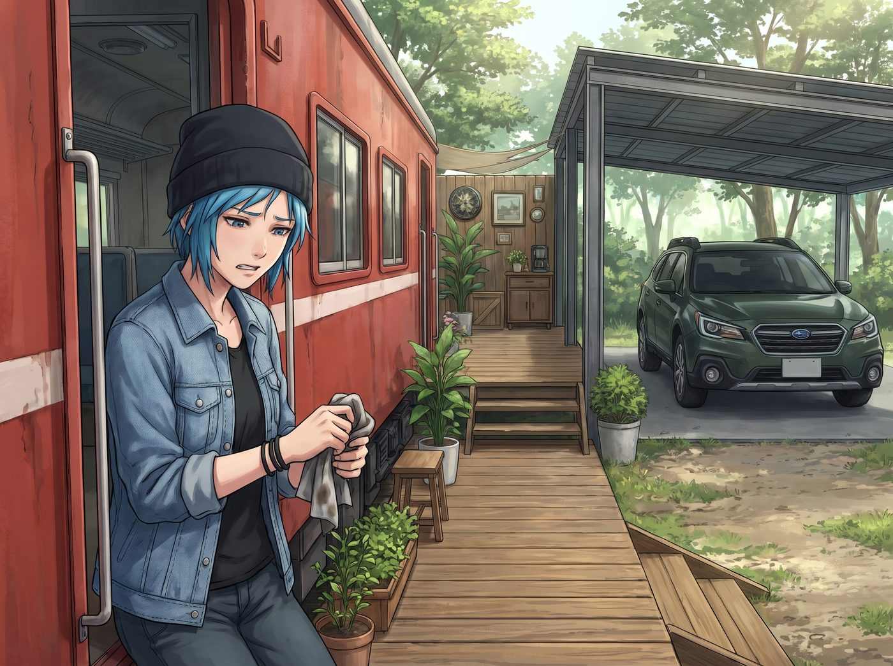
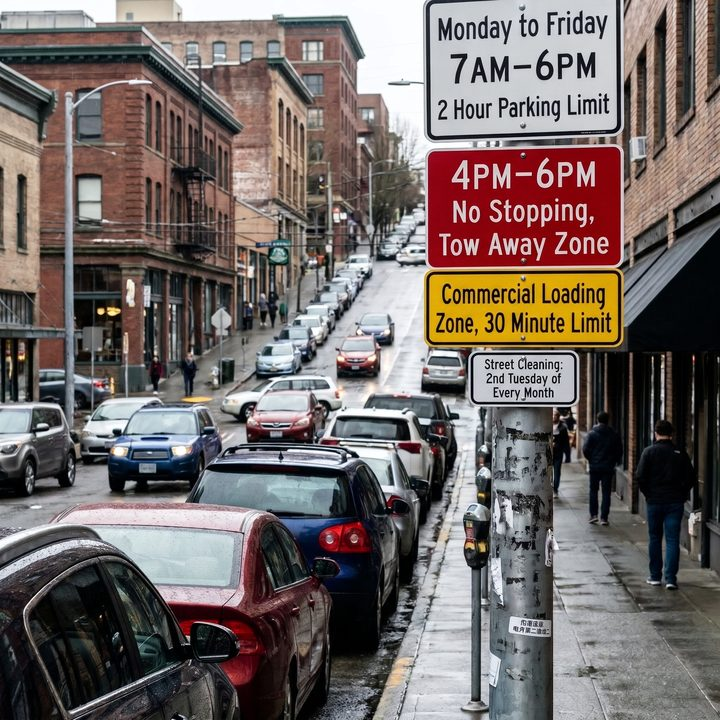
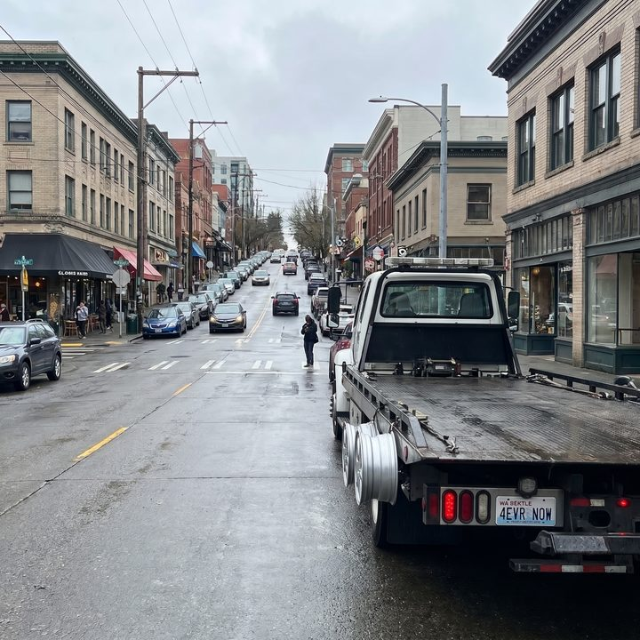
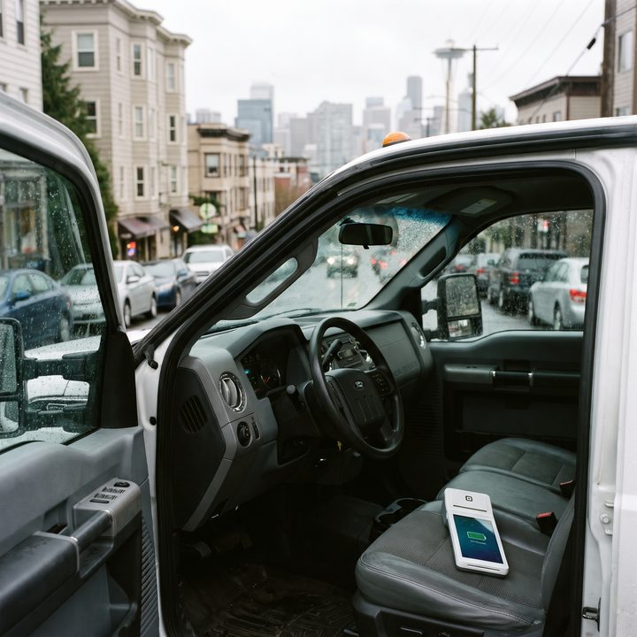

全時四驅不能拖




一、留院觀察
上個月，那輛在波特蘭公寓車位裡睡了三年的 Outback，終於被 Lily 開回了營地。
它停在鋼棚車位區的角落，墨綠色的車身擦得很乾淨，里程表上的數字少得可憐。Chloe 每天經過，都要往裡面看一眼，像在看一隻關在別人家籠子裡的珍稀動物。
這天早上，她靠在中節車廂的門框上，手裡拿著一塊特地抹了點機油的破布，一臉沉痛。
「發電機皮帶鬆了，還有一個火星塞在鬧脾氣。」她嘆了口氣，「猛禽今天得留院觀察。可是 Max 下午要去西雅圖那家書店拿預訂的攝影集……看來我只好勉為其難，幫妳那輛停太久的 Outback 熱熱車了。」
正在喝燕麥粥的 Lily 抬起眼睛，目光在 Chloe 那十根乾乾淨淨、連指甲縫都沒有一點黑的手指上停了兩秒。
她昨晚才聽見猛禽在林道上吼了半個小時。
但她什麼也沒說，只是放下湯匙，從抽屜裡拿出那把幾乎沒用過的 Subaru 鑰匙，放在桌上，用一根手指按住。
「油箱是滿的，Good To Go 通行證貼在擋風玻璃上。」她說，「只有一條規則：不要違規停車。」
她頓了頓。
「西雅圖的拖吊業者，大多用的是只架前輪的拖車。這是一台全時四驅。您比我更清楚這代表什麼。」
「安啦，表格大師。」Chloe 一把抓過鑰匙，在指尖轉了一圈，回頭朝已經背好相機包的 Max 眨眨眼，「普萊斯車神出馬，連一張罰單都不會沾到。」
二、四塊牌子
三個小時後，西雅圖國會山莊，一條永遠找不到車位的斜坡街。
「Chloe。」Max 搖下車窗，仰頭看著路邊一根柱子，「這上面掛了四塊牌子。」
那根柱子像是被市政府當成了公告欄。最上面一塊寫著「週一至週五 7AM–6PM 限停兩小時」；下面一塊紅字寫著「4PM–6PM 禁止停車，違者拖吊」；再下面一塊寫著「商業卸貨區，限持證車輛三十分鐘」；最底下還有一塊小的，寫著「街道清掃：每月第二個週二」。
「這是停車標誌，還是密碼學考題？」Max 說。
「管它的。」Chloe 拉起手煞車，「我們去對面拿書，順便買杯咖啡，頂多十五分鐘。現在三點四十。」她拍了拍方向盤，「如果十五分鐘也能遇到拖車，我就把這個方向盤吞下去。」
書店的店員找預訂單找了十分鐘。咖啡店排隊的人多了一點。Max 在店門口遇到一個 PNCA 的老同學，多聊了幾句。
十五分鐘變成了三十分鐘。
Chloe 端著兩杯冰美式推開咖啡店的門時，差點把塑膠杯捏爆。
馬路對面，一輛閃著橘黃警示燈的拖車，已經倒車頂在 Outback 前面。一個穿反光背心、滿臉絡腮鬍的壯漢剛操作完液壓臂，黑色的金屬托架已經卡進了 Outback 兩個前輪的底下。
「Holy shit——住手！」
Chloe 把兩杯咖啡往 Max 懷裡一塞，像顆砲彈一樣衝過了斑馬線。
這不只是罰單和贖車費的問題。
街頭那種為了速度而生的拖車，大多只抬前輪，讓後輪在地上跟著滾。前輪驅動的車這樣拖沒事；猛禽這種分時四驅的皮卡，打到二驅、掛空檔，也還能拖。
但這是一台 Subaru。前後輪之間，是一整套永遠連在一起的全時四驅系統。只抬前輪、讓後輪在地上硬拖一路，前後兩端的轉速差，足以把它的傳動系統慢慢磨成一堆昂貴的廢鐵。
「老兄！把它放下來！」Chloe 張開雙手擋在拖車旁邊，「這是全時四驅！你不能只抬前輪拖它！」
絡腮鬍連眼皮都沒抬，手還握在控制桿上：「小姐，牌子寫四點以後禁止停車。現在四點零八分。」他抬了抬下巴，「至於妳的變速箱會怎樣，那是妳跟保險公司的事。」
「你車上明明掛著輔助輪！」Chloe 指著拖車側面那對沉甸甸的金屬小輪架，「把它墊在後輪下面，五分鐘的事！」
絡腮鬍看了一眼那對輔助輪。在斜坡上裝那玩意，至少多花十分鐘，還得蹲下去跟輪胎搏鬥。這條街今天還有七輛車等著他拖。
「那對輪子的軸承壞了。」他隨口說，伸手就要按上升鍵，「讓開。車子已經掛上了，想現場放車，放車費一百三十五塊。只收現金。」
「我身上只有三十塊……」Max 抱著兩杯咖啡趕過來，臉色發白。
Chloe 摸遍了全身口袋，只摸出一張皺巴巴的二十塊和幾個硬幣。
液壓臂發出嗡嗡聲，Outback 的車頭一點一點離開了地面。
「打給 Lily！」
三、手冊第四百一十二頁
電話只響了一聲。
「我剛收到車子的防盜警報通知。」Lily 的聲音從擴音裡傳出來，背景是一陣急促的鍵盤聲，「位置在東派克街。您停在了下午四點的拖吊區。」
「現在不是算帳的時候！」Chloe 對著手機吼，「他要只架前輪硬拖！不肯上輔助輪！還說放車費只收現金！」
「請切換成視訊，Chloe 學姐。鏡頭對著拖車，慢慢繞一圈。」
Chloe 愣了一下，還是照做了。她按下視訊，把鏡頭轉向那輛拖車，從車頭慢慢移到車尾：黃色的警示燈，卡在 Outback 前輪下的托架，車身側面掛著的那對輔助輪，最後停在駕駛座的車門上。車門上印著拖吊公司的名字和客服信箱，下面一個白色的大字：14。
手機那頭，鍵盤聲忽然變得很急，敲了十幾秒，然後停了。
「好了。」Lily 說，「請把手機拿給司機。」
Chloe 把手機舉到絡腮鬍耳邊：「車主找你。」
「先生，午安。」Lily 的聲音禮貌得無懈可擊，「我是這台車的登記車主。我想先確認兩件事。」
絡腮鬍皺起眉頭：「說。」
「第一件。這台車的車主手冊第四百一十二頁，『拖吊』那一節，原廠寫得很清楚：這台車只能用平板車運送，或者四輪全部離地。」鍵盤聲停了一下，「我剛才已經把那一頁的截圖，寄到你們公司官網上公開的客服信箱。主旨寫的是您車門上的編號，十四號。」
絡腮鬍的手停在了控制桿上。
「如果您現在只抬前輪把它拖走，」Lily 繼續說，「之後傳動系統的任何損壞，維修估價單會寄到同一個信箱。我想您的老闆會比較想把這筆錢從您的抽成裡扣，而不是從他自己的利潤裡扣。」
「……第二件呢？」
「Max 學姐，」Lily 說，「您剛才傳到營地群組的那幾張照片，第四張。麻煩放大給他看。」
Max 愣了一秒，然後反應過來。剛才她跑過馬路的時候，下意識地舉起手機拍了好幾張——拖車的車牌、卡在前輪下的托架、掛在車身側面那對看起來完好如新的輔助輪——趁 Chloe 跟司機吵架的空檔，她手忙腳亂地全丟進了營地群組，只附了一句「救命」。
還有一張，是從拖車敞開的駕駛座車門拍進去的。
她用兩根手指把那張照片放大，轉過來，舉到絡腮鬍面前。
副駕駛座上，一台行動刷卡機安安靜靜地躺著，螢幕還亮著，電量顯示滿格。
拖車的柴油引擎在怠速。整條街好像都安靜了一秒。
絡腮鬍看著那張照片，又看了看那對他剛剛說「軸承壞了」的輔助輪，再看了看手機螢幕上那個安安靜靜的擴音圖示。
他在這條街上拖了十年車。他見過撒潑打滾的車主，見過當場哭出來的學生，見過拿出律師名片的科技新貴。但他從沒遇過一個連他車門上的編號、他副駕駛座上的東西、他老闆的客服信箱都已經處理好的人——而且那個人根本不在現場。
為了一筆抽成，去賭一顆傳動系統的維修帳單，怎麼算都不划算。
「……操。」
他往地上啐了一口，走回控制桿旁，往下一拉。
液壓洩氣，嘶嘶作響。Outback 的前輪慢慢落回地面，四個輪胎重新穩穩踩在柏油上。
他從駕駛座拿出那台滿電的刷卡機，塞到 Chloe 面前。
「一百三十五，加稅。」他說，「刷卡。」
四、全西雅圖最貴的咖啡
拖車閃著黃燈開走了。
Chloe 雙腿發軟地靠在 Outback 的引擎蓋上，長長吐出一口氣。Max 一手端著已經融了一半冰塊的美式，一手拿著還在通話中的手機。
「Lily，」Max 對著手機乾笑了一聲，「妳太神了。車子完全沒事。Chloe 刷了她的卡。」
電話那頭沉默了三秒。
然後，傳來了一個她們這輩子都不想再聽見的聲音——
原子筆尖在紙上滑過的，沙沙聲。
「很好。」Lily 平靜地說，「放車費一百三十五元，加稅。另外，違規停車的罰單會在兩週內寄到這台車的登記地址，也就是我的信箱。」沙沙聲又響了一下，「我會在收到的時候，把它轉交給 Chloe 學姐。」
「……我知道了。」
「還有，根據這台車的借用條件，」沙沙聲，「Chloe 學姐接下來一個月的洗碗輪值，增加百分之五十。」
「什麼借用條件？！妳給鑰匙的時候只說了一條！」
「是的。」Lily 說，「而那一條，您沒有遵守。」
電話掛斷了。
Chloe 低頭看著手裡那張一百四十多塊的刷卡收據，又抬頭看向 Max，表情悲壯。
「Caulfield，」她說，「這杯咖啡最好是全西雅圖最好喝的。因為它剛剛花掉了我下個月買新扳手的全部預算。」
Max 忍著笑，把吸管插進其中一杯冰美式，遞到她嘴邊。
「喝吧，車神。」她說，「至少妳今天不用吞方向盤了。」
Chloe 咬住吸管，喝了一大口，然後皺起眉頭。
「……冰都化了。」
「嗯。」Max 說，「三十分鐘了嘛。」